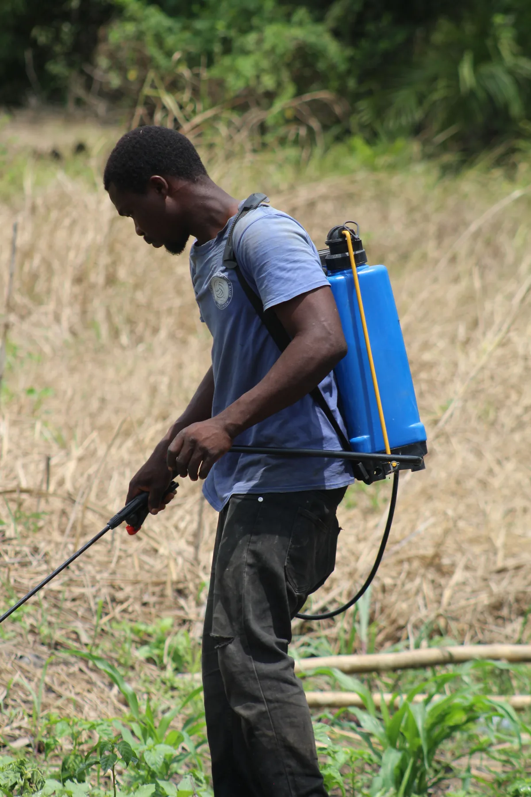

Agriculture and commodities
Producer and buyer relationships, processing opportunities, storage, logistics, equipment, market visits and commercial introductions.
Our role is to help clients understand the landscape, identify credible participants and organise the early stages of an assignment. Sector-specific technical, legal, financial and regulatory work is undertaken by the relevant qualified adviser or operating company.
Discuss a Sector Assignment
Producer and buyer relationships, processing opportunities, storage, logistics, equipment, market visits and commercial introductions.
Project introductions, site programmes, professional referrals, stakeholder mapping and early project coordination.
Market briefings, local partner research, institutional mapping and project-development introductions, subject to regulatory requirements.
Hotel and destination investment, supplier relationships, visitor programmes and hospitality partnerships.
Market-entry research, distributor and institutional mapping, local meeting coordination and referrals to regulatory specialists.
Commercial partnerships, warehousing, transport, ports, distribution and supply-chain opportunities.
Site and market visits, local supplier or distributor research, industrial-zone engagement and investment coordination.
Cross-border relationships among law, accounting, research, corporate-service, relocation and advisory firms.
Institutional and employer partnerships undertaken through the appropriately licensed recruitment or operating entity.
We accept opportunities only when the objective is lawful, the proposed parties can be identified, the information supplied is credible and appropriate professional support can be arranged.
Tell us what your organisation is seeking to achieve in Ghana. We will review the objective, scope and proposed timing before suggesting a responsible next step.